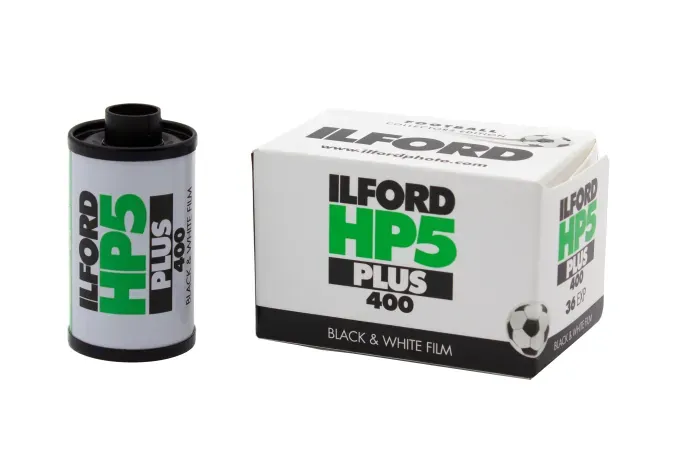
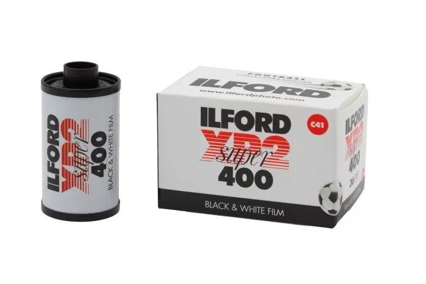
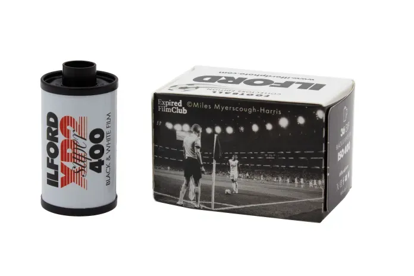
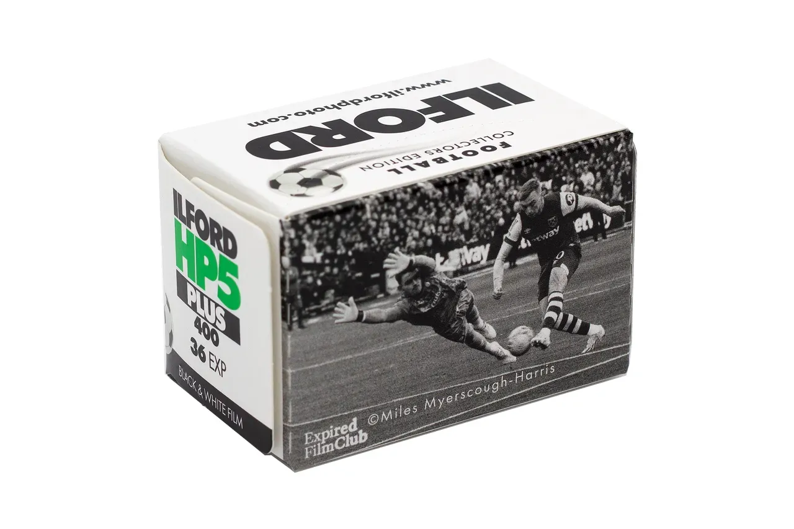

2026 FIFA 월드컵이 막을 올린 이번 주, 필름 진영에서도 작은 개막전이 있었다. 일포드의 모회사 하만 테크놀로지(Harman Technology)가 5월 27일 풋볼 컬렉터스 에디션 두 종을 내놨다. ISO 400 흑백의 대표 선수 HP5 Plus 와, 크로모제닉 진영의 XP2 Super 다.
한정판의 정체
먼저 분명히 해 둘 것. 안에 든 필름은 바뀐 게 없다. 유제도, 감도도, 현상 방식도 평소의 HP5 Plus 와 XP2 Super 그대로다. 카세트에도 한정판 표시가 없다. 달라진 것은 종이 상자 하나다. 그 상자에 축구를 필름으로 찍는 사진가, 마일스 마이어스코프-해리스(Miles Myerscough-Harris)의 흑백 사진이 입혀졌다.



Expired Film Club 이라는 이름
그는 인스타그램과 틱톡에서 Expired Film Club 으로 더 잘 알려져 있다. 합산 250만에 가까운 팔로워가 그의 피드에서 빈티지 필름 카메라로 찍은 NBA, 메이저리그, 스누커, 테니스, 그리고 축구를 본다. 한 세기를 넘긴 파노라마 필름 카메라를 들고 올드 트래포드에 가서 맨체스터 유나이티드와 리버풀의 경기를 1890년대 방식 그대로 찍은 일화로도 유명하다.
하만의 세일즈 디렉터 자일스 브랜스웨이트(Giles Branthwaite)는 "월드컵을 앞두고, 축구 팬으로 가득한 회사로서 마일스와 함께 축구 열기를 기념하고 싶었다"고 출시 배경을 밝혔다. 한정판이라고는 해도 전 세계 필름 소매처를 통해 향후 수개월간 공급된다. 국내에도 들어와 있다.

같은 ISO 400, 다른 현상 경로
이번 에디션이 고른 두 필름의 조합이 흥미롭다. 같은 감도의 흑백이지만 현상 경로가 다르다. HP5 Plus 는 전통 흑백 현상(자가현상파의 영원한 기본기), XP2 Super 는 C-41 크로모제닉이라 컬러 현상소 어디서나 맡길 수 있다. 흑백을 시작하고 싶은데 흑백 현상소가 멀다면 XP2 가 답이고, 약품 냄새까지가 흑백이라고 믿는 쪽엔 HP5 가 있다. 월드컵을 핑계로 두 경로를 나란히 써 보기 좋은 짝이다.

패키지만 다른 한정판을 어떻게 볼 것인가는 늘 갈리는 문제다. 다만 이번 에디션은 방향이 분명하다. 필름으로 스포츠를 찍는 사진가의 사진이, 그 필름의 얼굴이 됐다. 셔터를 누를 이유가 하나 늘었다면, 상자는 제 역할을 한 것이다. 어차피 상자는 뜯으라고 있는 것이고, 안의 36컷은 평소의 그 믿음직한 ISO 400 이다.
자료 출처
PetaPixel, Kosmo Foto, Digital Camera World, Amateur Photographer, ILFORD Photo 공식 자료.
@expiredfilmclub ↗ · ilfordphoto.com ↗